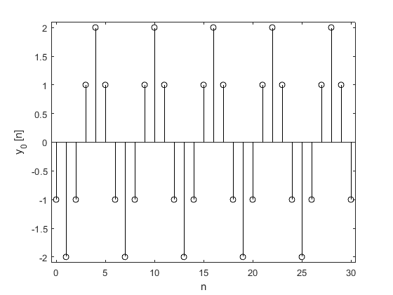
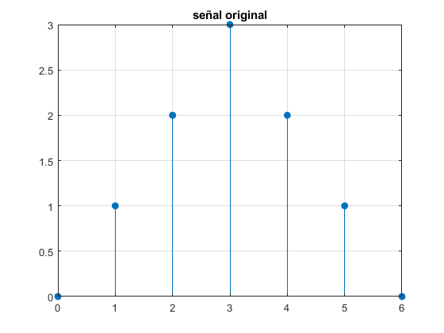
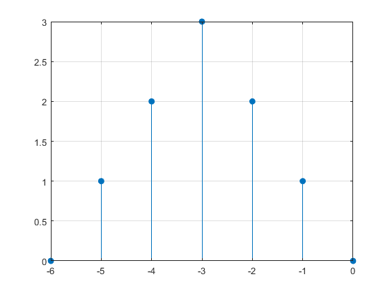
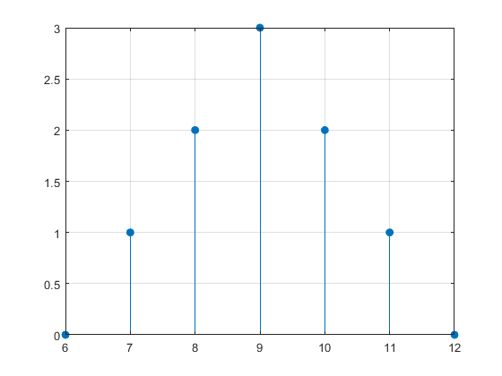
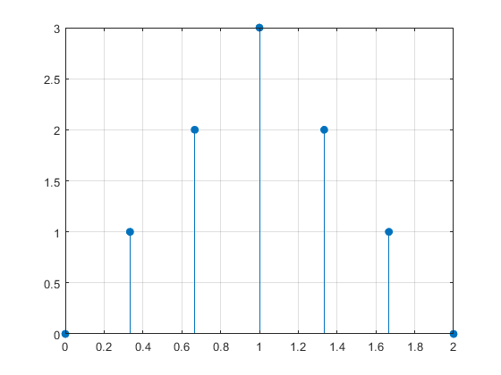
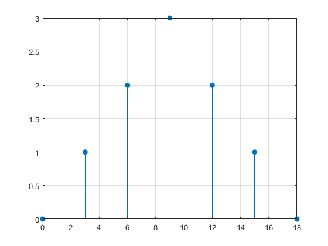
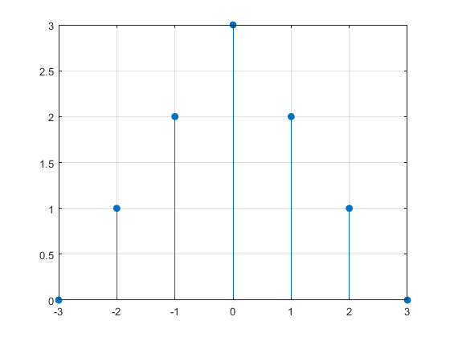
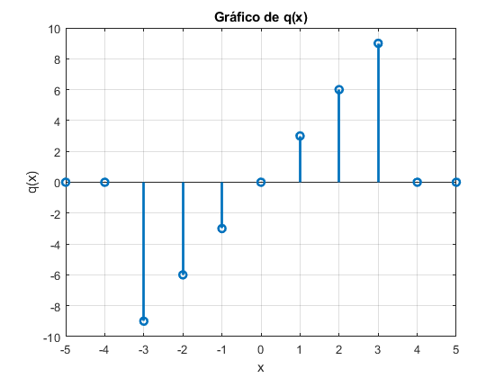
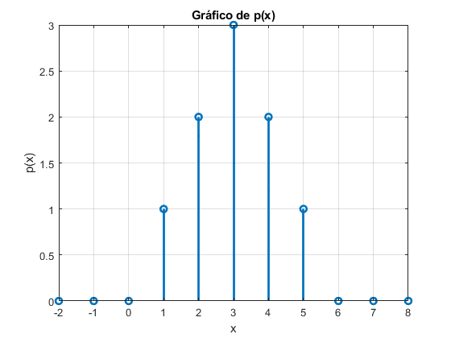

Práctica 4: Señales en tiempo discreto
- López Solano Irvin
- Moreno Castro José Pablo
- Pedraza Ocampo Eduardo
- Portillo Martinez Carolina
- Reyes Álvarez Angel
Contents
Problema 3.11-2
b=[1 0 0]; a=[1 -1 1]; n=(0:30)'; delta=@(n) 1.0.*(n==0); h=filter(b,a,delta(n)); clf; stem(n,h,'k'); axis([-.5 30.5 -1.1 1.1]); xlabel('n'); ylabel('h[n]'); x=@(n) cos(2*pi*n/6).*(n>=0); y= filter(b,a,x(n)); stem(n,y,'k'); xlabel('n'); ylabel('y_[n]'); z_i=filtic(b,a,[1 2]); y_0=filter(b,a,zeros(size(n)),z_i); stem(n,y_0,'k'); xlabel('n'); ylabel('y_{0} [n]'); axis([-0.5 30.5 -2.1 2.1]); y_total=filter(b,a,x(n),z_i); sum(abs(y_total-(y + y_0)))
ans = 1.8430e-14
Problema 3.2-7
Se resuelve el problema 3.2-7
3.2-7 Para la señal mostrada, bosqueje las siguientes señales
n=0:6; xn=[0 1 2 3 2 1 0]; stem(n,xn,'filled') title("señal original") grid
Una vez teniendo la señal a escalar, y recordando lo básico se obtienen sus bosquejos resultantes
- x[-n]
Al ser -n la señal resultante será el espejo de la original
stem(-n,xn,'filled');
grid
 - x[n+6]
Cuando se tiene una suma, la señal se desplazará a la izquierda 6 unidades
stem(n-6,xn,'filled');
grid
- x[n-6]
Cuando se tiene una resta la señal se desplazará a la derecha 6 unidades
stem(n+6,xn,'filled');
grid
 - x[3n]
Si se tiene una multiplicación, la señal se comprime por un factor de 3
stem(n./3,xn,'filled');
grid
 - x[n/3]
Al aplicarse la división, la señal se expande por un factor de 3
stem(n.*3,xn,'filled');
grid
 - x[3-n]
Esta señal refleja la señal respecto al punto 3
stem(3-n,xn,'filled');
grid
 Problema 3.11-6
Se resuelve el problema 3.11-6
Supongamos que existe un vector x en MATLAB espacio de trabajo, correspondiente a una duración finita Señal DT x[n] (a) Escriba una función de MATLAB que, cuando pasa el vector x, calcula y devuelve Ex, la energía de x[n]. (b) Escriba una función de MATLAB que, cuando pasa el vector x, calcula y devuelve Px, la potencia de x[n]. Supongamos que x[n] es periódico y ese vector x contiene datos para un número entero de períodos de x[n].
Inciso a) problema 3.11-6
clear x; clear n;clear Ex; clear i; clc n=input('Ingrese el numero de elementos de su señal: '); x=[1:n]; for i=1:n fprintf('ingrese el valor %d de su señal',i); x(i)=input(': '); end x=x.^2; Ex=sum(x); fprintf('la energia de su señal es %d: ',Ex);
Inciso b) problema 3.11-6
clear x; clear n;clear Px; clear i; clc n=input('Ingrese el periodo de su señal: '); x=[1:n]; for i=1:n fprintf('ingrese el valor %d de su señal',i); x(i)=input(': '); end x=x.^2; Px=(1/n)*sum(x); fprintf('la potencia de su señal es %.3f: \n',Px);
Problemas 3.1-1 c) y 3.1-2 b)
Se resuelve el problema 3.1-1 c) y 3.1-2 b),
3.1-1 Encuentra la energía de las señales representadas.
q = @(x) (x >= -3 & x <= 3) .* (3 * x); x_values = -5:1:5; y_values = q(x_values); figure stem(x_values, y_values, 'LineWidth', 2); title('Gráfico de q(x)'); xlabel('x'); ylabel('q(x)'); grid on; % % % 3.1-2 Encuentre la potencia de las señales ilustradas p = @(x) (x >= 0 & x <= 3) .* x + (x > 3 & x <= 6) .* (-x + 6); x_values = -2:1:8; y_values = p(x_values); figure; stem(x_values, y_values, 'LineWidth', 2); title('Gráfico de p(x)'); xlabel('x'); ylabel('p(x)'); grid on; % Solucion al problema 3.1-1 clear x; clear n; clear Ex; clear i; clc q = @(x) (x >= -3 & x <= 3) .* (3 * x); x_values = -3:1:3; x = q(x_values); x = x.^2; Ex = sum(x); fprintf('La energía de la señal es: %d\n', Ex); % Solucion al problema 3.1-2 clear x; clear n; clear Px; clear i; n = 5; x = [1, 2, 3, 4, 5]; x = x.^2; Px = (1/n) * sum(x); fprintf('La potencia de la señal es %.3f\n', Px); % %
La energía de la señal es: 252 La potencia de la señal es 11.000 